等下一个春天~
金渐成Drive 截图 PDFOCR待核对
原始截图优先 · OCR 仅辅助检索
原始 PDF 不公开，本页展示捕获页面的截图。 下方优先展示原始截图；自动识别文字默认收起，仅辅助检索与对照。OCR 由程序自动识别，尚未逐字核对，可能存在错字、漏字、漏行、顺序或断行错误。留言与作者回复仅限截图中可见的内容，不代表完整线上留言，也未据此推断留言总数。
OCR 识别提示（待核对）
- OCR 自动识别文字，尚未逐字校对；可能错字、漏字、漏行，数字、姓名、标点及断行也可能有误，请以截图为准。
- 这里只保留 PDF 已截到的正文、留言和作者回复；截图以外的留言不在此存档中。
- 未从截图推断留言总数或回复关系；手机界面文字也可能混入 OCR。
- 低置信标记仅为机器提示，并不表示未标记的文字已经准确。
识别工具：tesseract 5.5.0 · tesseract-ocr/tessdata_best chi_sim。识别器置信度仅用于提示核对，不是文字准确率。
第 1 页 · 原始截图
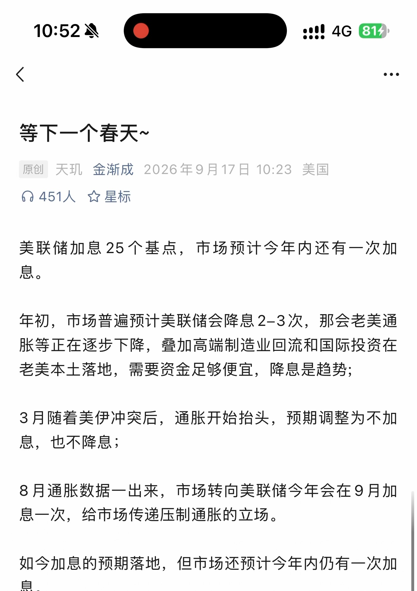
第 1 页原始捕获截图 · 单独打开／放大原图查看本页自动识别文字（OCR待核对） · 10 处低置信度提示
以下为未经逐字核对的自动识别结果，请以上方原图为准。
ocx 人》 :om
等下一个春天 ~
原创天现金渐成 2026 年 9 月 17 日 10:23 美国们 451 人空星标
美联储加息 25 个基点， 市场预计今年内还有一次加息。
年初， 市场普遍预计美联储会降息 2-3 次， 那会老美通胀等正在逐步下降， 奴加高端制造业回流和国际投资在老美本土落地， 需要资金足够便宜， 降息是趋势 ;
3 月随着美伊冲突后， 通胀开始抬头， 预期调整为不加息， 也不降息 ;
8 月通胀数据一出来， 市场转向美联储今年会在 9 月加息一次， 给市场传递压制通胀的立场。
如今加息的预期落地， 但市场还预计今年内仍有一次加息。
识别器标记 10 处低置信度，请对照截图核对
这些是识别器的风险提示，并不等于已确认的错误。
- ocx 人》 :om
- 原创天现金渐成 2026 年 9 月 17 日 10:23 美国
- 们 451 人空星标
- 胀等正在逐步下降， 奴加高端制造业回流和国际投资在
- 老美本土落地， 需要资金足够便宜， 降息是趋势 ;
第 2 页 · 原始截图
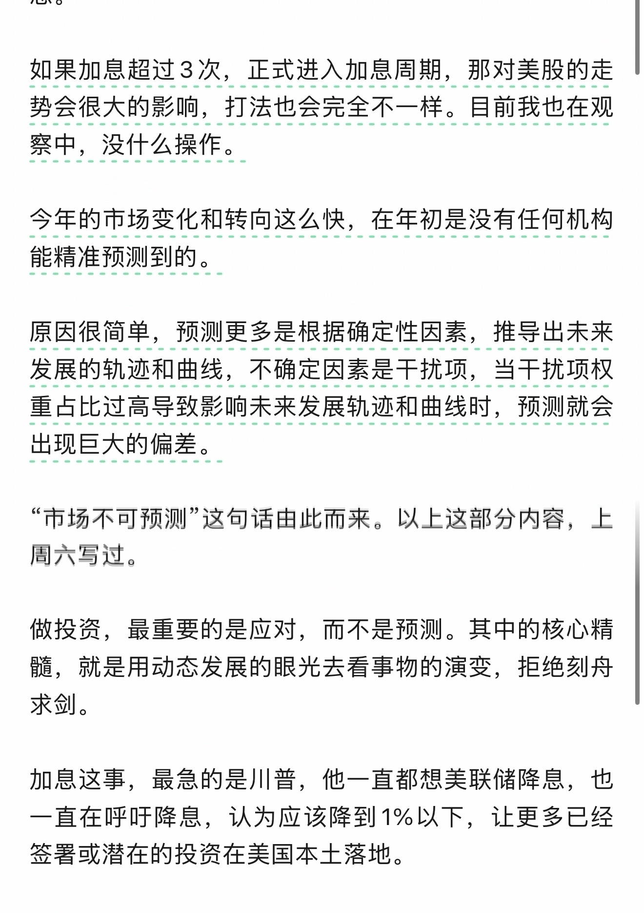
第 2 页原始捕获截图 · 单独打开／放大原图查看本页自动识别文字（OCR待核对） · 12 处低置信度提示
以下为未经逐字核对的自动识别结果，请以上方原图为准。
YA DO
如果加息超过 3 次， 正式进入加息周期， 那对美股的走势会很大的影响， 打法也会完全不一样。 目前我也在观察中， 没什么操作。
原因很简单， 预测更多是根据确定性因素， 推导出未来发展的轨迹和曲线， 不确定因素是干扰项， 当干扰项权2 预测就会
“市场不可预测 “这名话由此而来。 以上这部分内容， 上周六写过。做投资， 最重要的是应对， 而不是预测。 其中的核心精
髓， 就是用动态发展的眼光去看事物的演变， 拒绝刻舟求剑 0
加息这事， 最急的是川普， 他一直都想美联储降息， 也一直在呼吁降息， 认为应该降到 1% 以下， 让更多已经签署或潜在的投资在美国本土落地。
识别器标记 12 处低置信度，请对照截图核对
这些是识别器的风险提示，并不等于已确认的错误。
- YA DO
- 发展的轨迹和曲线， 不确定因素是干扰项， 当干扰项权
- 2 预测就会
- “市场不可预测 “这名话由此而来。 以上这部分内容， 上
- 髓， 就是用动态发展的眼光去看事物的演变， 拒绝刻舟
- 求剑 0
第 3 页 · 原始截图
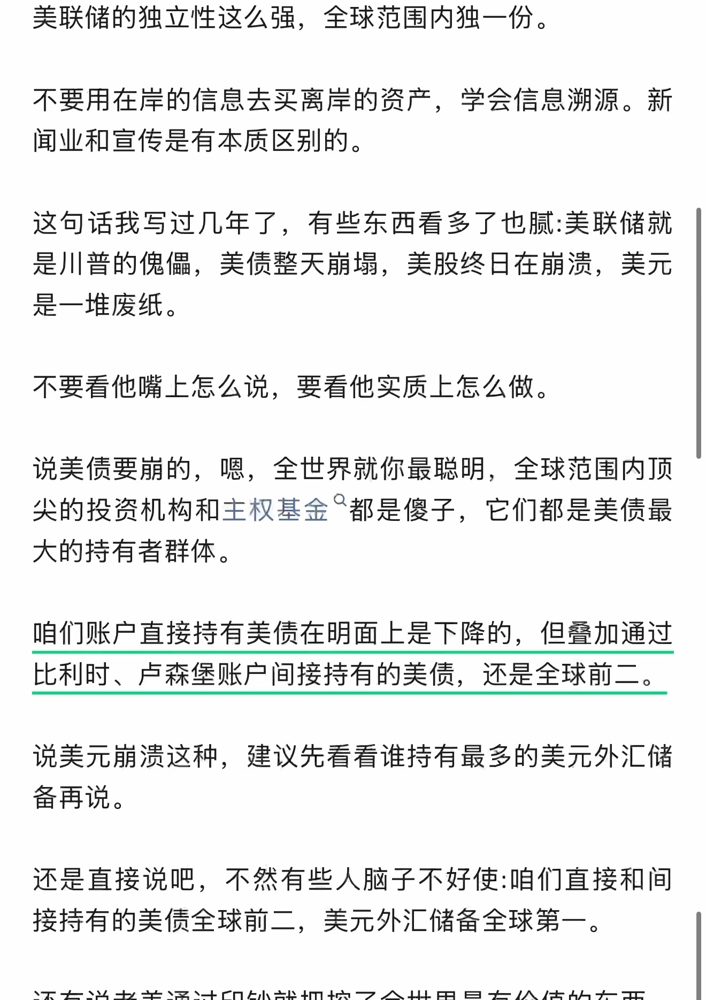
第 3 页原始捕获截图 · 单独打开／放大原图查看本页自动识别文字（OCR待核对） · 28 处低置信度提示
以下为未经逐字核对的自动识别结果，请以上方原图为准。
美联储的独立性这么强， 全球范围内独一份。
不要用在岸的信息去买离岸的资产， 学会信息溯源。 新闻业和宣传是有本质区别的。
这句话我写过几年了， 有些东西看多了也腻 : 美联储就是川普的盆儒， 美债整天骨塌， 美股终日在崩溃， 美元是一堆废纸。
不要看他隧上怎么说， 要看他实质上怎么做。
说美债要骨的， 嗯， 全世界就你最聪明， 全球范围内项尖的投资机构和主权基金 “都是傻子， 它们都是美债最大的持有者群体。
咱们账户直接持有美债在明面上是下降的， 但于加通过比利时、 卢森堡账户间接持有的美便， 还是全球前二。
说美元骨泪这种， 建议先看看谁持有最多的美元外汇储备再说。
还是直接说吧， 不然有些人脑子不好使 :咱们直接和间接持有的美债全球前二， 美元外汇储备全球第一。
识别器标记 28 处低置信度，请对照截图核对
这些是识别器的风险提示，并不等于已确认的错误。
- 美联储的独立性这么强， 全球范围内独一份。
- 这句话我写过几年了， 有些东西看多了也腻 : 美联储就
- 是川普的盆儒， 美债整天骨塌， 美股终日在崩溃， 美元
- 不要看他隧上怎么说， 要看他实质上怎么做。
- 说美债要骨的， 嗯， 全世界就你最聪明， 全球范围内项
- 尖的投资机构和主权基金 “都是傻子， 它们都是美债最
- 咱们账户直接持有美债在明面上是下降的， 但于加通过
- 比利时、 卢森堡账户间接持有的美便， 还是全球前二。
- 说美元骨泪这种， 建议先看看谁持有最多的美元外汇储
- 还是直接说吧， 不然有些人脑子不好使 :咱们直接和间
第 4 页 · 原始截图
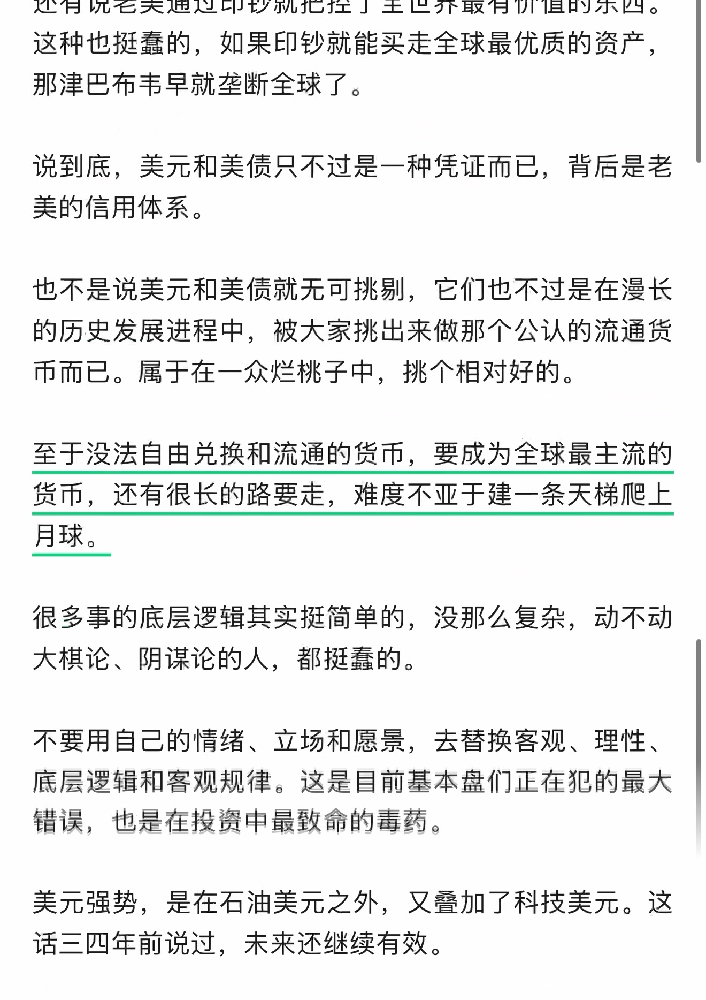
第 4 页原始捕获截图 · 单独打开／放大原图查看本页自动识别文字（OCR待核对） · 23 处低置信度提示
以下为未经逐字核对的自动识别结果，请以上方原图为准。
还有说老美通过印钞就把控了全世界最有价值的东西。这种也挺蠢的， 如果印钞就能买走全球最优质的资产，那津巴布韦早就垄断全球了。
说到底， 美元和美债只不过是一种凭证而已， 背后是老美的信用体系。
也不是说美元和美债就无可挑易， 它们也不过是在漫长的历史发展进程中， 被大家挑出来做那个公认的流通货币而已。 属于在一众烂桃子中， 挑个相对好的。
至于没法自由兑换和流通的货币， 要成为全球最主流的货币， 还有很长的路要走， 难度不亚于建一条天梯爬上月球。
很多事的底层逻辑其实挺简单的， 没那么复杂， 动不动大棋论、 阴谋论的人， 都挺剧的。
不要用自己的情绪、 立场和愿景， 去蔡换客观、 理性、廊层远辑和窘观规律。 这是目前基本盘们正在犯的最大错误， 也是在投资申最致命的毒药。
美元强势， 是在石油美元之外， 又旱加了科技美元。 这话三四年前说过， 未来还继续有效。
识别器标记 23 处低置信度，请对照截图核对
这些是识别器的风险提示，并不等于已确认的错误。
- 这种也挺蠢的， 如果印钞就能买走全球最优质的资产，
- 那津巴布韦早就垄断全球了。
- 说到底， 美元和美债只不过是一种凭证而已， 背后是老
- 也不是说美元和美债就无可挑易， 它们也不过是在漫长
- 货币， 还有很长的路要走， 难度不亚于建一条天梯爬上
- 很多事的底层逻辑其实挺简单的， 没那么复杂， 动不动
- 大棋论、 阴谋论的人， 都挺剧的。
- 廊层远辑和窘观规律。 这是目前基本盘们正在犯的最大
- 错误， 也是在投资申最致命的毒药。
- 美元强势， 是在石油美元之外， 又旱加了科技美元。 这
第 5 页 · 原始截图
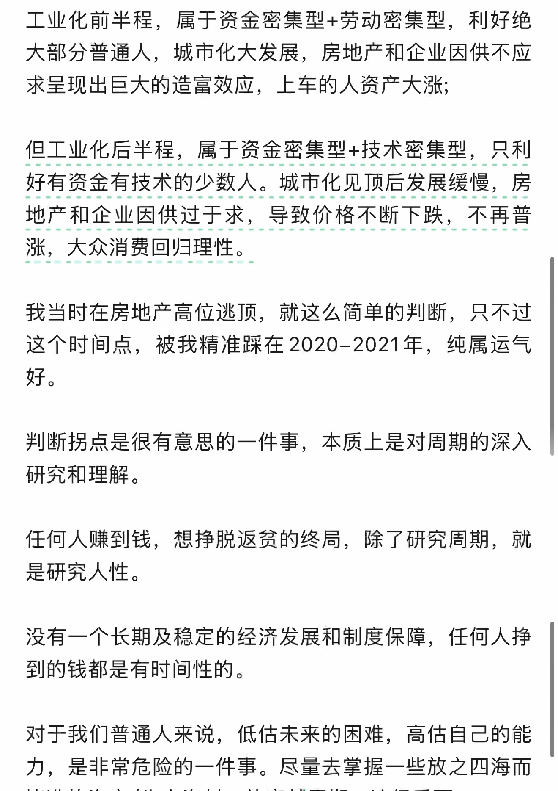
第 5 页原始捕获截图 · 单独打开／放大原图查看本页自动识别文字（OCR待核对） · 15 处低置信度提示
以下为未经逐字核对的自动识别结果，请以上方原图为准。
工业化前半程， 属于资金密集型 + 劳动密集型， 利好绝大部分普通人， 城市化大发展， 房地产和企业因供不应求呈现出巨大的造富效应， 上车的人资产大涨 ;
但工业司尘各属于资金密集型 + 护林密集型， 只利
我当时在房地产高位逃顶， 就这么简单的判断， 只不过这个时间点， 被我精准踩在 2020-2021 年， 纯属运气好。
判断拐点是很有意思的一件事， 本质上是对周期的深入研究和理解。
任何人赚到钱， 想挣脱返贫的终局， 除了研究周期， 就是研究人性。
没有一个长期及稳定的经济发展和制度保障， 任何人择到的钱都是有时间性的。
对于我们普通人来说， 低估未来的困难， 高估自己的能力， 是非常危险的一件事。 尽量去掌握一些放之四海而
识别器标记 15 处低置信度，请对照截图核对
这些是识别器的风险提示，并不等于已确认的错误。
- 大部分普通人， 城市化大发展， 房地产和企业因供不应
- 求呈现出巨大的造富效应， 上车的人资产大涨 ;
- 但工业司尘各属于资金密集型 + 护林密集型， 只利
- 我当时在房地产高位逃顶， 就这么简单的判断， 只不过
- 判断拐点是很有意思的一件事， 本质上是对周期的深入
- 任何人赚到钱， 想挣脱返贫的终局， 除了研究周期， 就
- 没有一个长期及稳定的经济发展和制度保障， 任何人择
第 6 页 · 原始截图
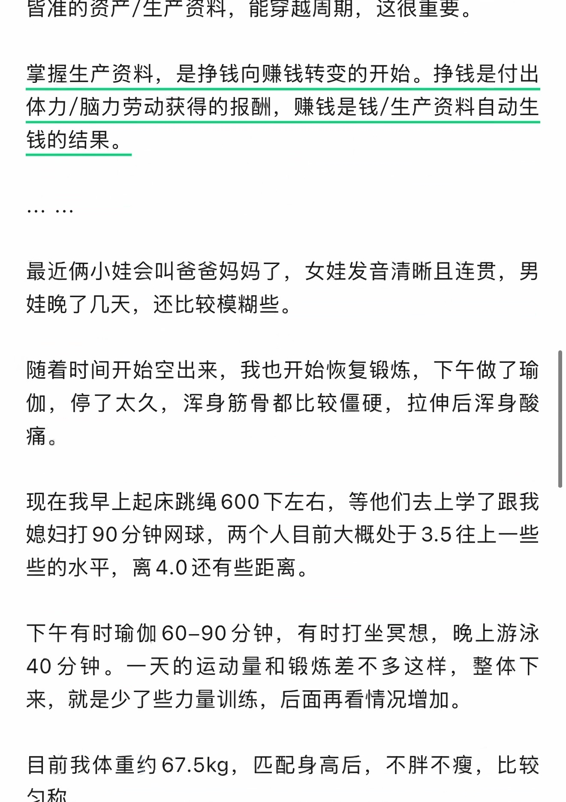
第 6 页原始捕获截图 · 单独打开／放大原图查看本页自动识别文字（OCR待核对） · 24 处低置信度提示
以下为未经逐字核对的自动识别结果，请以上方原图为准。
缠准的资产 /生产资料， 能穿越周期， 这很重要。
掌握生产资料， 是挣钱向赚钱转变的开始。 挣钱是付出体力 /脑力劳动获得的报酬， 赚钱是钱 / 生产资料自动生钱的结果。
最近俩小娃会叫和爸爸妈妈了， 女娃发音清晰且连贯， 男娃晚了几天， 还比较模糊些。
随着时间开始空出来， 我也开始恢复锻炼， 下午做了瑜伽， 停了太久， 浑身筋骨都比较僵硬， 拉伸后浑身酸痛 0
现在我早上起床跳绳 600 下左右， 等他们去上学了跟我媳妇打 90 分钟网球， 两个人目前大概处于 3.5 往上一些些的水平， 离 4.0 还有些距离。
下午有时瑜伽 60-90 分钟， 有时打坐眉想， 晚上游泳40 分钟。 一天的运动量和锻炼差不多这样， 整体下来， 就是少了些力量训练， 后面再看情况增加。
目前我体重约 67.5kg， 匹配身高后， 不胖不瘦， 比较匀称。
识别器标记 24 处低置信度，请对照截图核对
这些是识别器的风险提示，并不等于已确认的错误。
- 缠准的资产 /生产资料， 能穿越周期， 这很重要。
- 最近俩小娃会叫和爸爸妈妈了， 女娃发音清晰且连贯， 男
- 随着时间开始空出来， 我也开始恢复锻炼， 下午做了瑜
- 伽， 停了太久， 浑身筋骨都比较僵硬， 拉伸后浑身酸
- 痛 0
- 现在我早上起床跳绳 600 下左右， 等他们去上学了跟我
- 媳妇打 90 分钟网球， 两个人目前大概处于 3.5 往上一些
- 下午有时瑜伽 60-90 分钟， 有时打坐眉想， 晚上游泳
- 40 分钟。 一天的运动量和锻炼差不多这样， 整体下
- 目前我体重约 67.5kg， 匹配身高后， 不胖不瘦， 比较
- 匀称。
第 7 页 · 原始截图
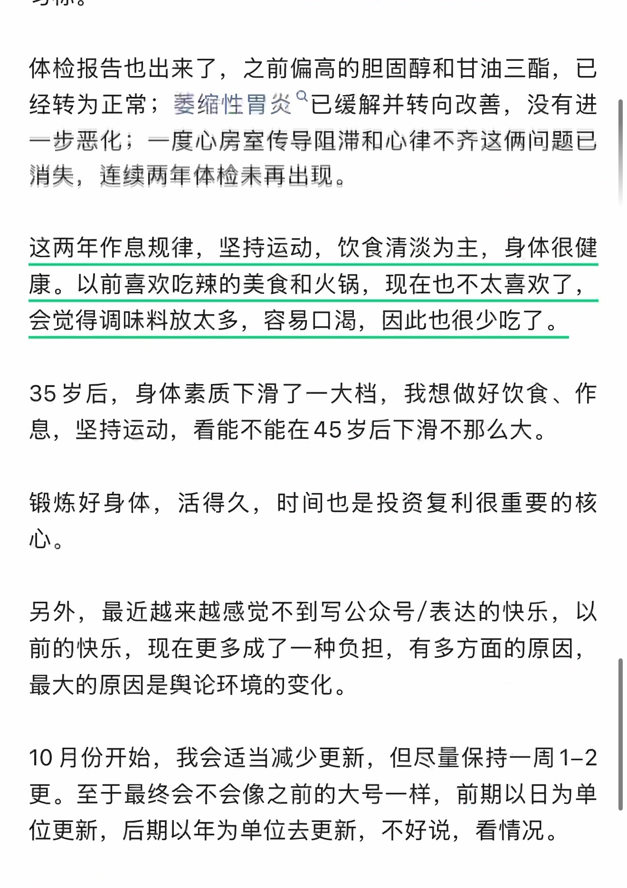
第 7 页原始捕获截图 · 单独打开／放大原图查看本页自动识别文字（OCR待核对） · 30 处低置信度提示
以下为未经逐字核对的自动识别结果，请以上方原图为准。
体检报告也出来了， 之前偏高的胆固醇和甘油三酯， 已经转为正常 ; 萎缩性胃炎 “已缓解并转向改善， 没有进一步悉化 ; 一度心房室传导险灌和心律不齐这俩间题已消从， 连续两年体检索再出秽。
这两年作息规律， 坚持运动， 饮食清淡为主， 身体很健康。 以前膏欢吃辣的美食和火锅， 现在也不太喜欢了，会觉得调味料放太多， 容易口渴， 因此也很少吃了。
35 败后， 身体素质下滑了一大档， 我想做好饮食、 作息， 坚持运动， 看能不能在 45 岁后下滑不那么大。
锻炼好身体， 活得久， 时间也是投资复利很重要的核
心。
另外， 最近越来越感觉不到写公众号 /表达的快乐， 以前的快乐， 现在更多成了一种负担， 有多方面的原因，最大的原因是与论环境的变化。
10 月份开始， 我会适当减少更新， 但尽量保持一周 1-2更。 至于最终会不会像之前的大号一样， 前期以日为单位更新， 后期以年为单位去更新， 不好说， 看情况。
识别器标记 30 处低置信度，请对照截图核对
这些是识别器的风险提示，并不等于已确认的错误。
- 体检报告也出来了， 之前偏高的胆固醇和甘油三酯， 已
- 经转为正常 ; 萎缩性胃炎 “已缓解并转向改善， 没有进
- 一步悉化 ; 一度心房室传导险灌和心律不齐这俩间题已
- 消从， 连续两年体检索再出秽。
- 康。 以前膏欢吃辣的美食和火锅， 现在也不太喜欢了，
- 35 败后， 身体素质下滑了一大档， 我想做好饮食、 作
- 息， 坚持运动， 看能不能在 45 岁后下滑不那么大。
- 最大的原因是与论环境的变化。
- 更。 至于最终会不会像之前的大号一样， 前期以日为单
第 8 页 · 原始截图
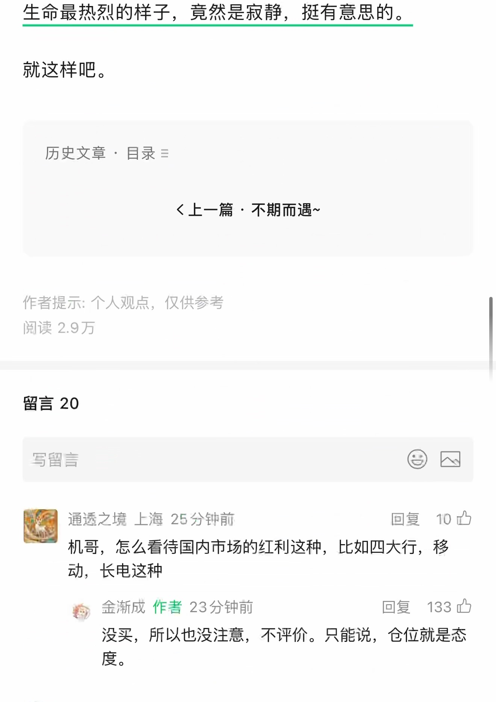
第 8 页原始捕获截图 · 单独打开／放大原图查看本页自动识别文字（OCR待核对） · 18 处低置信度提示
以下为未经逐字核对的自动识别结果，请以上方原图为准。
就这样吧。
历史文章， 目录 =
《上一篇不期而遇 ~
作者提示 : 个人观点， 仅供参考
阅读 2.9 万留言 20
写留言 CE一通透之境上海 25 分钟前回复 10 办
机哥， 怎么看待国内市场的红利这种， 比如四大行， 移动， 长电这种
和痊， 金渐成作者 23 分钟前回复 133 办没买， 所以也没注意， 不评价。 只能说， 仓位就是态度。
识别器标记 18 处低置信度，请对照截图核对
这些是识别器的风险提示，并不等于已确认的错误。
- 历史文章， 目录 =
- 《上一篇不期而遇 ~
- 阅读 2.9 万
- 写留言 CE
- 一通透之境上海 25 分钟前回复 10 办
- 机哥， 怎么看待国内市场的红利这种， 比如四大行， 移
- 和痊， 金渐成作者 23 分钟前回复 133 办
第 9 页 · 原始截图
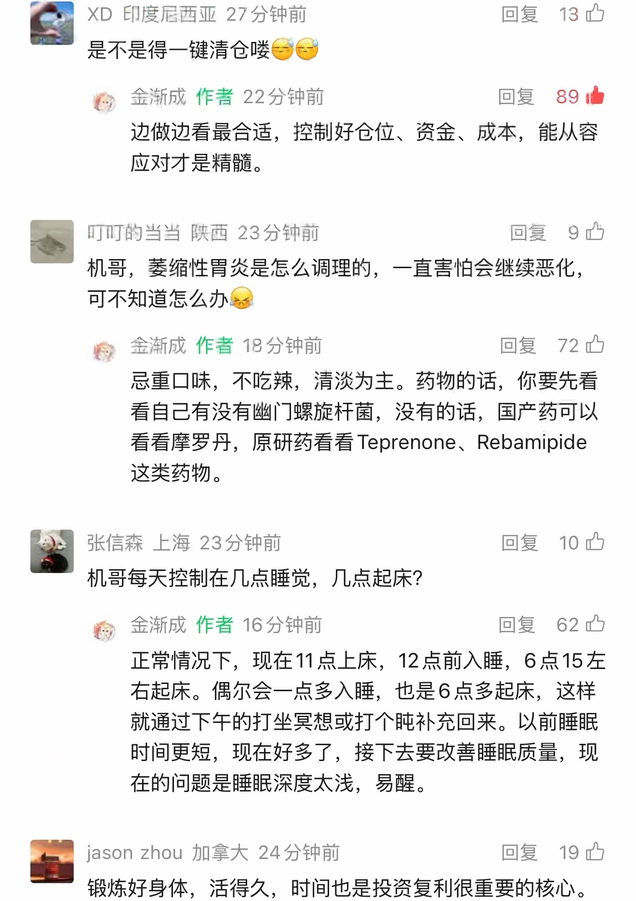
第 9 页原始捕获截图 · 单独打开／放大原图查看本页自动识别文字（OCR待核对） · 52 处低置信度提示
以下为未经逐字核对的自动识别结果，请以上方原图为准。
轿 XD 印度尼西亚 27 分钟前回复 “13 办是不是得一键清仓哗久铺四， 人金渐成作者 22 分钟前回复 89 由边做边看最合适， 控制好仓位、 资金、 成本， 能从容应对才是精咽。图叮 IJ 的当当陕西 23 分钟前回复 9 上机哥， 萎缩性胃炎是怎么调理的， 一直害怕会继续恶化，可不知道怎么办篇仆人金渐成作者 18 分钟前回复 “72 内
尽重口味， 不吃辣， 清淡为主。 药物的话， 你要先看看自己有没有幽门螺旋杆菌， 没有的话， 国产药可以看看摩罗丹， 原研药看看 Teprenone、Rebamipide
这类药物。国六上和 232 回复 10 办机哥每天控制在几点睡觉， 几点起床 ?长， 金渐成作者 16 分钟前回复 62 办
正常情况下， 现在 11 点上床，12 点前入睡，6 点 15 左右起床。 偶尔会一点多入睡， 也是 6 点多起床， 这样就通过下午的打坐冥想或打个上腌补充回来。 以前睡眠时间更短， 现在好多了， 接下去要改善睡眠质量， 现在的问题是睡眠深度太浅， 易醒。
| jason zhou 加拿大 24 分钟前回复已
锻炼好身体， 活得久， 时间也是投资复利很重要的核心。
识别器标记 52 处低置信度，请对照截图核对
这些是识别器的风险提示，并不等于已确认的错误。
- 轿 XD 印度尼西亚 27 分钟前回复 “13 办
- 是不是得一键清仓哗久铺
- 四， 人金渐成作者 22 分钟前回复 89 由
- 应对才是精咽。
- 图叮 IJ 的当当陕西 23 分钟前回复 9 上
- 机哥， 萎缩性胃炎是怎么调理的， 一直害怕会继续恶化，
- 可不知道怎么办篇
- 仆人金渐成作者 18 分钟前回复 “72 内
- 尽重口味， 不吃辣， 清淡为主。 药物的话， 你要先看
- 看看摩罗丹， 原研药看看 Teprenone、Rebamipide
- 国六上和 232 回复 10 办
- 长， 金渐成作者 16 分钟前回复 62 办
- 正常情况下， 现在 11 点上床，12 点前入睡，6 点 15 左
- 就通过下午的打坐冥想或打个上腌补充回来。 以前睡眠
- | jason zhou 加拿大 24 分钟前回复已
第 10 页 · 原始截图
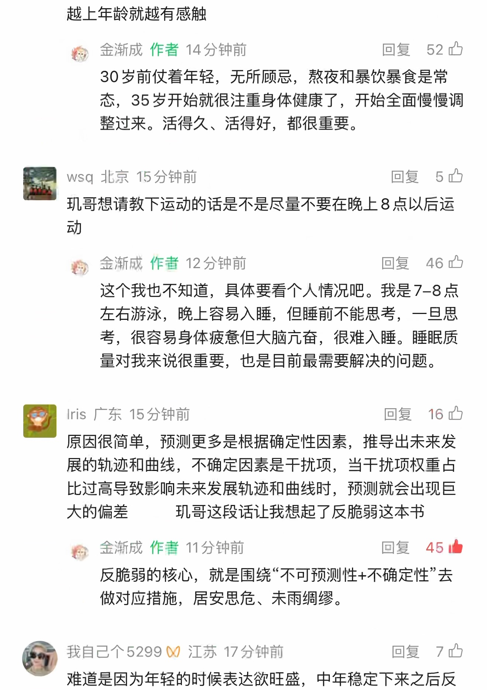
第 10 页原始捕获截图 · 单独打开／放大原图查看本页自动识别文字（OCR待核对） · 57 处低置信度提示
以下为未经逐字核对的自动识别结果，请以上方原图为准。
越上年龄就越有感触
从金渐成作者 14 分钟前回复 ”52 内30 岁前仗着年轻， 无所顾忌， 熬认和暴饮暴食是党态，35 岁开始就很注重身体健康了， 开始全面慢慢调整过来。 活得久、 活得好， 都很重要。
| wsq 北京 1 分钟前回复已
现哥想请教下运动的话是不是尽量不要在晚上 8 点以后运动
灶， 金渐成作者 12 分钟前回复 46 咱这个我也不知道， 具体要看个人情况吧。 我是 7-8 点左右游泳， 晚上容易入睡， 但睡前不能思考， 一旦思考， 很容易身体疲惫但大脑亢奋， 很难入睡。 睡眠质量对我来说很重要， 也是目前最需要解决的问题。
| Iris 广东 15 分钟前回复而忆原因很简单， 预测更多是根据确定性因素， 推导出未来发展的轨迹和曲线， 不确定因素是干扰项， 当干扰项权重占比过高导致影响未来发展轨迹和曲线时， 预测就会出现巨大的偏差现哥这段话让我想起了反脆弱这本书
灶金渐成作者 11 分钟前回复如本
反脆弱的核心， 就是围绕 “不可预测性 + 不确定性去做对应措施， 居安思危、 未雨绸缪。
令我自己个 5299 % 江苏 17 分钟前回复 7 只难道是因为年轻的时候表达和欲旺盛， 中年稳定下来之后反
识别器标记 57 处低置信度，请对照截图核对
这些是识别器的风险提示，并不等于已确认的错误。
- 从金渐成作者 14 分钟前回复 ”52 内
- 30 岁前仗着年轻， 无所顾忌， 熬认和暴饮暴食是党
- | wsq 北京 1 分钟前回复已
- 现哥想请教下运动的话是不是尽量不要在晚上 8 点以后运
- 灶， 金渐成作者 12 分钟前回复 46 咱
- 这个我也不知道， 具体要看个人情况吧。 我是 7-8 点
- 考， 很容易身体疲惫但大脑亢奋， 很难入睡。 睡眠质
- | Iris 广东 15 分钟前回复而忆
- 展的轨迹和曲线， 不确定因素是干扰项， 当干扰项权重占
- 大的偏差现哥这段话让我想起了反脆弱这本书
- 灶金渐成作者 11 分钟前回复如本
- 反脆弱的核心， 就是围绕 “不可预测性 + 不确定性去
- 做对应措施， 居安思危、 未雨绸缪。
- 令我自己个 5299 % 江苏 17 分钟前回复 7 只
- 难道是因为年轻的时候表达和欲旺盛， 中年稳定下来之后反
第 11 页 · 原始截图
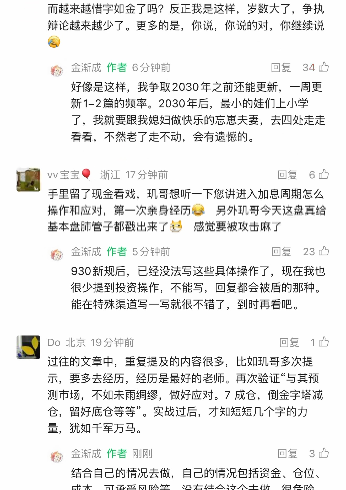
第 11 页原始捕获截图 · 单独打开／放大原图查看本页自动识别文字（OCR待核对） · 51 处低置信度提示
以下为未经逐字核对的自动识别结果，请以上方原图为准。
而越来越惜字如金了呜 ? 反正我是这样， 岁数大了， 争执辩论越来越少了。 更多的是， 你说， 你说的对， 你继续说人
答， 金渐成作者 6 分钟前回复人已好像是这样， 我争取 2030 年之前还能更新， 一周更新 1-2 篇的频率。2030 年后， 最小的娃们上小学了， 我就要跟我媳妇做快乐的忘串夫妻， 去四处走走看看， 不然老了走不动， 会有遗司的。
ww 宝宝丰浙江 17 分钟前回复已手里留了现金看戏， 现哥想听一下您讲进入加息周期怎么操作和应对， 第一次素身经历够 ”另外哥今天这嚼真给基本盘肺管子都蕉出来了盒 ”感觉要被攻击麻了
等金渐成作者 5 分钟前回复 ”23 四930 新规后， 已经没法写这些具体操作了， 现在我也很少提到投资操作， 不能写， 回复都会被盾的那种。能在特殊渠道写一写就很不错了， 到时再看吧。
Do 北京 19 分钟前回复已过往的文章中， 重复提及的内容很多， 比如现哥多次提示， 要多去经历， 经历是最好的老师。 再次验证与其预测市场， 不如未雨绸纪， 做好应对。7 成仓， 倒金字塔减仓， 留好底仓等等。 实战过后， 才知短短几个字的力量， 犹如干军万马。
等金渐成作者刚刚回复 wo结合自己的情况去做， 自己的情况包括资金、 仓位、
识别器标记 51 处低置信度，请对照截图核对
这些是识别器的风险提示，并不等于已确认的错误。
- 而越来越惜字如金了呜 ? 反正我是这样， 岁数大了， 争执
- 人
- 答， 金渐成作者 6 分钟前回复人已
- 好像是这样， 我争取 2030 年之前还能更新， 一周更
- 了， 我就要跟我媳妇做快乐的忘串夫妻， 去四处走走
- 看看， 不然老了走不动， 会有遗司的。
- ww 宝宝丰浙江 17 分钟前回复已
- 手里留了现金看戏， 现哥想听一下您讲进入加息周期怎么
- 操作和应对， 第一次素身经历够 ”另外哥今天这嚼真给
- 基本盘肺管子都蕉出来了盒 ”感觉要被攻击麻了
- 等金渐成作者 5 分钟前回复 ”23 四
- 930 新规后， 已经没法写这些具体操作了， 现在我也
- 很少提到投资操作， 不能写， 回复都会被盾的那种。
- 能在特殊渠道写一写就很不错了， 到时再看吧。
- Do 北京 19 分钟前回复已
- 过往的文章中， 重复提及的内容很多， 比如现哥多次提
- 测市场， 不如未雨绸纪， 做好应对。7 成仓， 倒金字塔减
- 仓， 留好底仓等等。 实战过后， 才知短短几个字的力
- 量， 犹如干军万马。
- 等金渐成作者刚刚回复 wo
第 12 页 · 原始截图
第 12 页原始捕获截图 · 单独打开／放大原图查看本页自动识别文字（OCR待核对） · 8 处低置信度提示
以下为未经逐字核对的自动识别结果，请以上方原图为准。
成本、 可承受风险等， 没有结合这个去做， 很危险，就像火车出轨。
Q 美联储加息利好哪些板块
每金渐成如四 3 2
1496 1289 247 20
识别器标记 8 处低置信度，请对照截图核对
这些是识别器的风险提示，并不等于已确认的错误。
- 成本、 可承受风险等， 没有结合这个去做， 很危险，
- Q 美联储加息利好哪些板块
- 每金渐成如四 3 2
- 1496 1289 247 20
按日期浏览全部来源（同日按条目标识排序）
回到页首 ↑